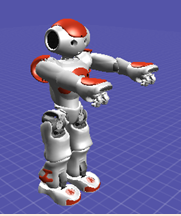
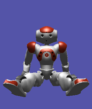

ALRobotPosture¶
Overview | API
What it does¶
ALRobotPosture module allows you to make the robot go to different predefined postures.
You can choose between ALRobotPosture::goToPosture() and ALRobotPosture::applyPosture().
- If you want to do an autonomous application, always choose the ALRobotPosture::goToPosture().
- If you just want a shortcut to reach the posture quickly when manipulating the robot you can use ALRobotPosture::applyPosture() (you will have to help the robot).
How it works¶
The robot detects in which posture it is, computes a path from its current posture to its target posture, and applies it.
It is possible to choose the speed for the posture to be applied.
Definitions¶
- Posture
A posture for a robot is a (unique) configuration of its joints and of inertial sensor.
As a posture is defined by a list of real numbers (i.e. floats) there is an infinite number of postures.
- Predefined postures
Here is the list of the Predefined Postures: Crouch, LyingBack, LyingBelly, Sit, SitRelax, Stand, StandInit, StandZero.
Stand StandInit StandZero 

 Crouch Sit SitRelax 

 LyingBelly LyingBack 

Note
Some postures (like Sit or Lying) are not available for all types of robot (see NAO Body type). Use ALRobotPosture::getPostureList() to retrieve the list of predefined postures available on your robot.
- Posture family
As the number of possible postures is infinite, postures are grouped in Posture families in order to ease the interpretation of the current posture.
For example, the posture family Sitting contains the postures SitRelax and Sit as well as all the approaching postures.
Here is the list of posture families:
- Standing
- Sitting
- LyingBelly
- LyingBack
- LyingLeft
- LyingRight
- Belly
- Back
- Left
- Right
- UpsideDown
- Kneeling
- Lifted
Getting started¶
Python example
# -*- encoding: UTF-8 -*-
import sys
from naoqi import ALProxy
def main(robotIP):
try:
postureProxy = ALProxy("ALRobotPosture", robotIP, 9559)
except Exception, e:
print "Could not create proxy to ALRobotPosture"
print "Error was: ", e
postureProxy.goToPosture("StandInit", 1.0)
postureProxy.goToPosture("SitRelax", 1.0)
postureProxy.goToPosture("StandZero", 1.0)
postureProxy.goToPosture("LyingBelly", 1.0)
postureProxy.goToPosture("LyingBack", 1.0)
postureProxy.goToPosture("Stand", 1.0)
postureProxy.goToPosture("Crouch", 1.0)
postureProxy.goToPosture("Sit", 1.0)
print postureProxy.getPostureFamily()
if __name__ == "__main__":
robotIp = "127.0.0.1"
if len(sys.argv) <= 1:
print "Usage python alrobotposture.py robotIP (optional default: 127.0.0.1)"
else:
robotIp = sys.argv[1]
main(robotIp)